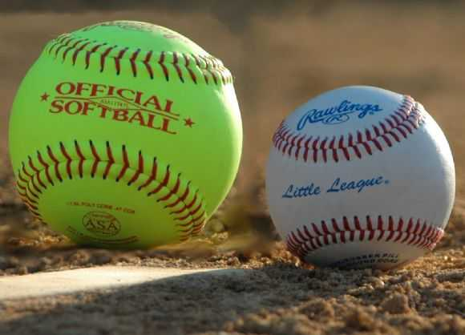

Üdvözöllek az oldalamon!
Ez az oldal a kedvenc sportommal, a softballal foglalkozik. Rövid betekintést nyújt a sportág szabályaiba, a játék menetébe, bemutat néhány ismertebb csapatot és lehetőséget nyújt jelentkezni egy most alakuló csapatba is!
Ez az oldal a kedvenc sportommal, a softballal foglalkozik. Rövid betekintést nyújt a sportág szabályaiba, a játék menetébe, bemutat néhány ismertebb csapatot és lehetőséget nyújt jelentkezni egy most alakuló csapatba is!
A softballt gyakran emlegetik "női baseball" néven is, de ez nem fedi le teljesen a valóságot. Mind a két sportot űzik férfi, illetve női csapatok is, de az igaz, hogy a női softball sokkal ismertebb és gyakoribb.
Az első és legfontosabb különbség a labda mérete: a képen is látszik, hogy a softball labda jóval nagyobb, de a nevével ellentétben egyáltalán nem puha, sőt, ugyanolyan anyagból és technikával készül, mint a baseball labdák.
A másik különbség a pálya mérete: a labdákkal ellentében itt a softball pályája kisebb, a gyerekméretű baseballpálya méreteivel egyezik (a dobótávolságot leszámítva).
A harmadik jellegzetes különbség a dobási technika: míg a baseballban ugyanúgy, mint általában, fentről dobnak az emberek, addig a softballban egy karkörzéshez hasonló mozdulat után alulról engedi el a labdát a dobó.
